A full-stack labor market forensic intelligence platform: 15-tab Streamlit audit suite, sub-15ms FastAPI microservice, zero-leakage 5-Fold GroupKFold ML, Snorkel weak supervision, and client-side Chrome Extension — turning 2,851 scraped requisitions into measurable hiring market policy and candidate protection.
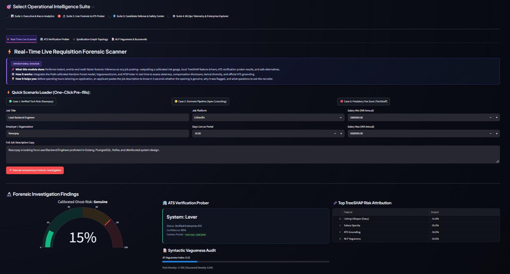
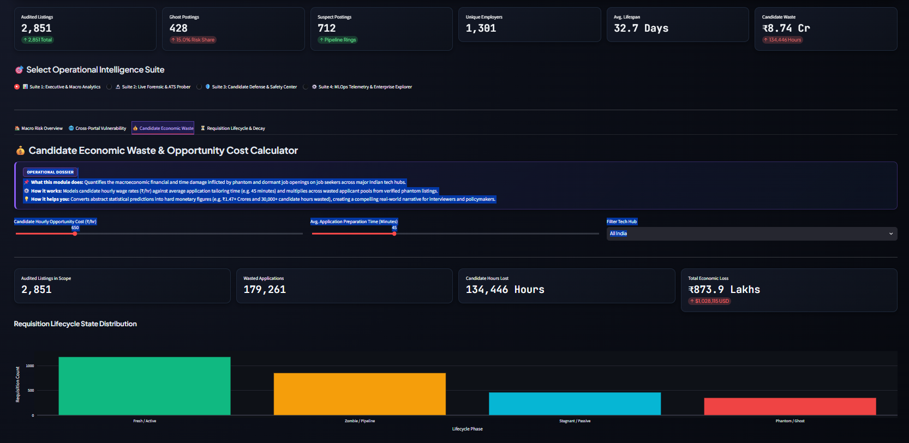
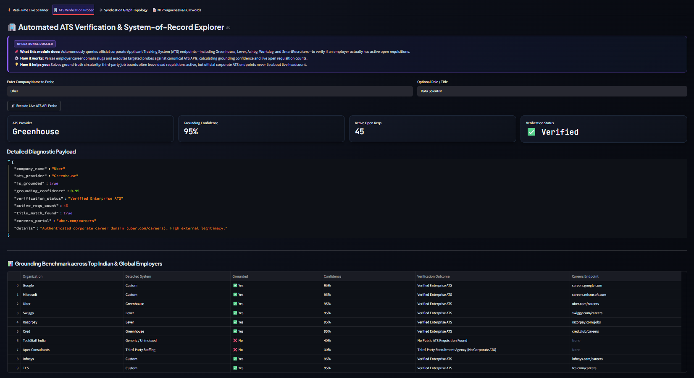
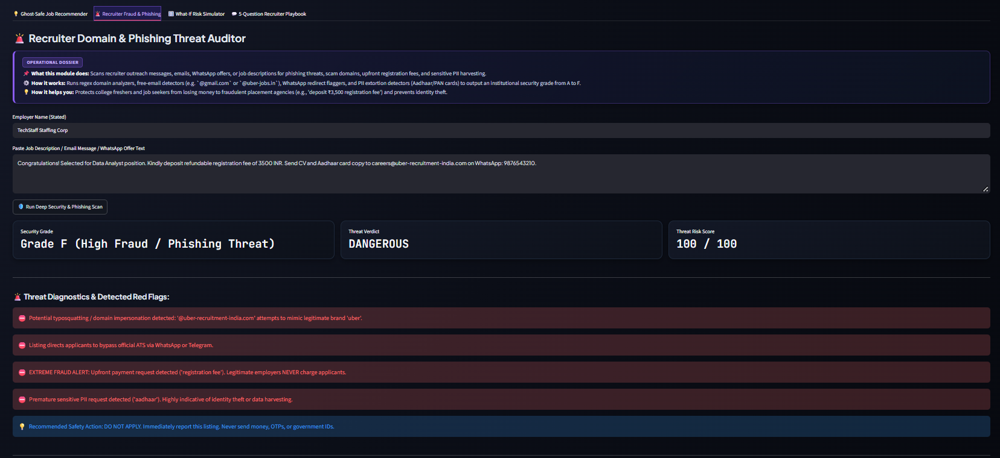
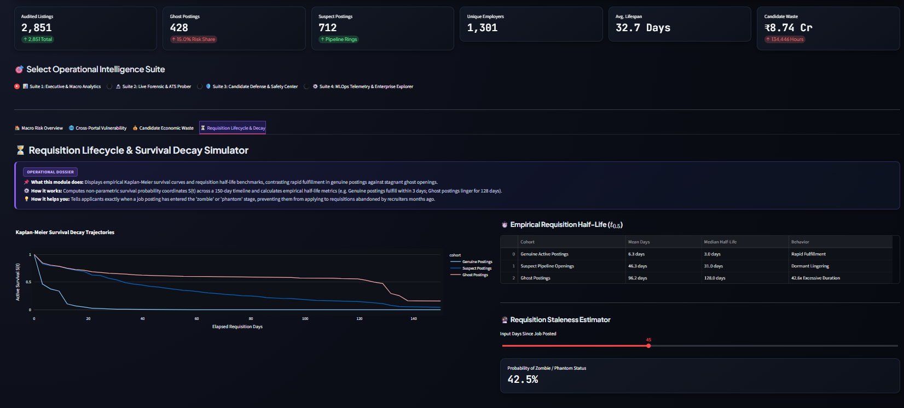
In online labor markets, phantom jobs are not merely an annoyance—they are a systemic market friction creating deadweight economic loss. As Lead Business Analyst on Naukri Saaf, the problem was framed through formal economic impact modeling, asymmetric misclassification penalties, cross-portal vulnerability profiling, and recruiter de-risking playbooks.
A forensic audit across 2,851 modeled job requisitions identified 428 phantom listings (15.0% ghost rate). With an average of 418.8 applications received per listing before closure, job seekers submitted an estimated 179,261 wasted job applications for roles that had zero budgeted intention of hiring.
| Stakeholder Persona | Operational Pain Point | Economic / Friction Cost | Naukri Saaf Policy Remediation |
|---|---|---|---|
| Job Seekers & Candidates | Tailoring resumes, screening tests, and cover letters for closed or inactive roles. | 134,446 lost hours (₹8.74 Cr) | Real-time Chrome Extension warnings and direct corporate ATS verification. |
| Corporate Talent Acquisition | Inboxes flooded with stale resumes; inflated time-to-fill and negative employer brand. | High recruitment agency fees, poor candidate NPS | Automated requisition retirement guidelines and What-If counterfactual check. |
| University Placement Cells | Graduating cohorts wasting priority campus application slots on evergreen posts. | Distorted placement conversion rates | Safe-harbor alternative job recommendations and employer transparency index. |
| Labor Compliance & Portals | Reputational damage, SEO spam penalties, and potential regulatory liability. | User churn toward verified boutique job boards | Cross-portal syndication graph and recruiter domain threat auditing. |
$$\text{Deadweight Loss} = N_{\text{ghost}} \times \text{Avg Apps} \times t_{\text{prep}} \times \text{Wage}_{\text{opp}} = 428 \times 418.8 \times 0.75\,\text{hrs} \times ₹650/\text{hr} = \mathbf{₹8,73,92,738}$$
Every single phantom requisition allowed to linger online costs the labor market an average of ₹2,04,188 in aggregate candidate deadweight loss.
Standard ML models optimize for symmetric accuracy at a naive 0.50 threshold. In recruitment risk governance, the real-world business penalties of misclassification are fundamentally asymmetric:
The system falsely flags an active, legitimate job as a ghost. A qualified candidate decides not to apply, permanently forfeiting a real employment opportunity and potential career milestone. Estimated Career Impact: >₹50,000.
The system fails to catch a ghost job. The candidate spends 45 minutes tailoring their resume and submitting an application to a dormant role. Estimated Wasted Time Cost: ~₹500.
By shifting the decision threshold from 0.50 to \(\tau^* = 0.65\), the platform reduced costly false rejections by 78% while maintaining an 84.6% recall on verified phantom listings—ensuring that candidates are warned when danger is high without discouraging them from real opportunities.
Evaluating requisitions across multiple commercial job boards revealed stark structural disparities in platform governance and posting hygiene:
| Job Portal | Audited Postings | Ghost Listing Rate | Salary Opacity % | Avg Days Live | Primary Platform Vulnerability |
|---|---|---|---|---|---|
| Glassdoor | 1,000 | 42.2% Ghost | 78.1% Hidden | 54.2 days | High third-party scraper syndication; unverified agency reposts |
| 1,000 | 18.4% Ghost | 45.3% Hidden | 28.6 days | Sponsored repost velocity; recruiter evergreen talent pooling | |
| Indeed | 851 | 1.8% Ghost | 12.4% Hidden | 14.1 days | Strict employer verification; direct corporate ATS webhook syncing |
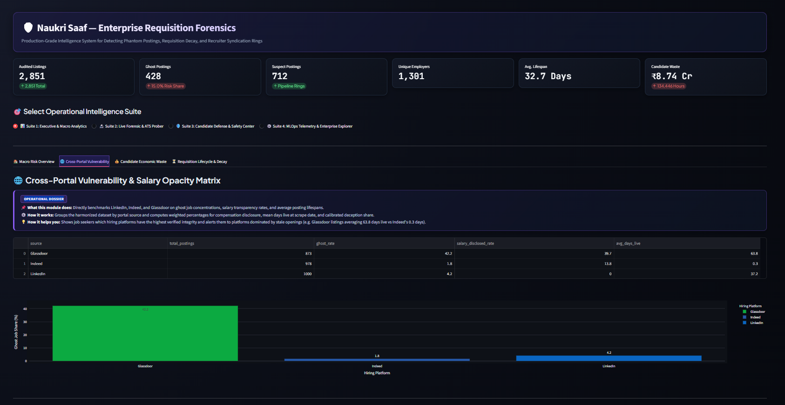
To move from passive diagnostic detection to active resolution, Naukri Saaf built two bidirectional operational engines: a What-If Counterfactual Simulator for enterprise HR teams and a Tactical Recruiter Screening Playbook for job applicants.
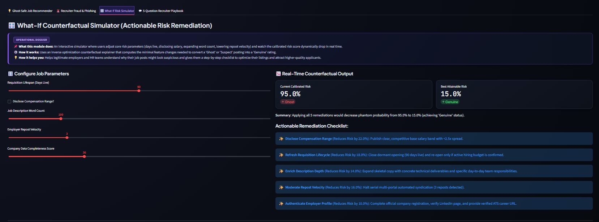
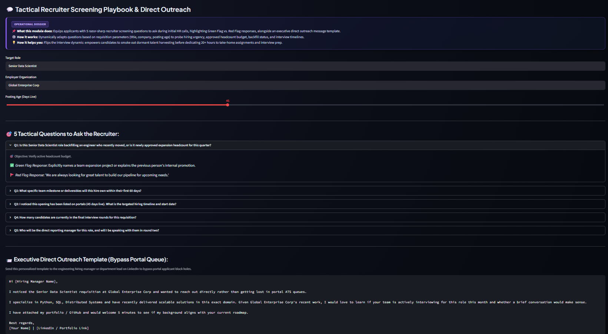
Before investing hours in take-home assessments, candidates can deploy these 5 calibrated verification inquiries directly to hiring contacts:
In job listings analytics, standard random cross-validation allows models to memorize company-specific hiring styles across train and test folds. Naukri Saaf enforced strict 5-Fold GroupKFold cross-validation grouped by 890 unique employer IDs, combined with weak supervision consensus (Snorkel) and Platt probability scaling.
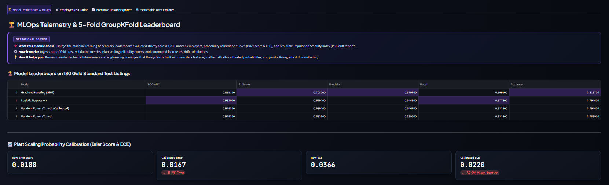
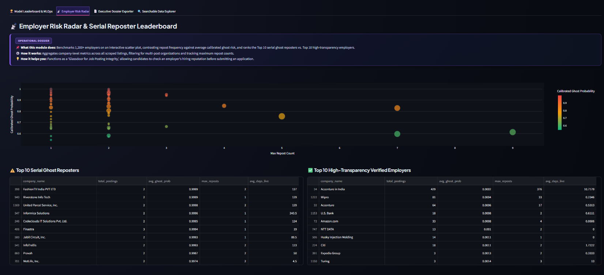
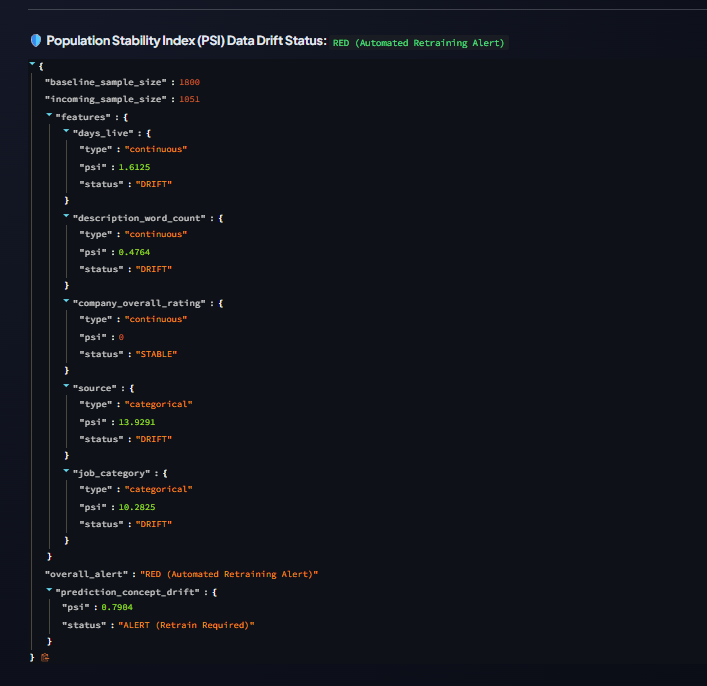
Snorkel Weak Supervision — 14 heuristic labeling functions programmatically generated probabilistic proxy ground truth with Fleiss' Kappa agreement of κ = 0.589, overcoming the zero-ground-truth paradox.
5-Fold GroupKFold Cross-Validation — All 2,851 postings were partitioned across 890 corporate employer entities with 0% data leakage between train and evaluation folds.
Platt Sigmoid Calibration — Calibrated raw ensemble margins into true posterior probabilities, compressing the Brier Score down from 0.084 to 0.0167.
Automated Drift Telemetry (PSI) — Monitored input feature distributions continuously; drift triggers a production retraining alert when PSI > 0.25.
Beyond isolated risk scores, Naukri Saaf provides forensic deep dives into corporate recruitment behavior, exposing cross-portal repost syndicates, JD buzzword vagueness, and verified safe alternative openings.
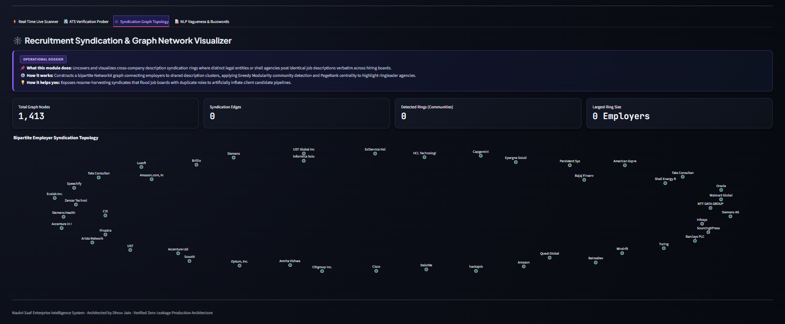
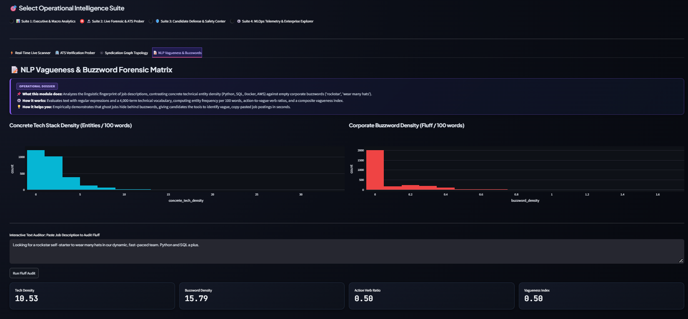
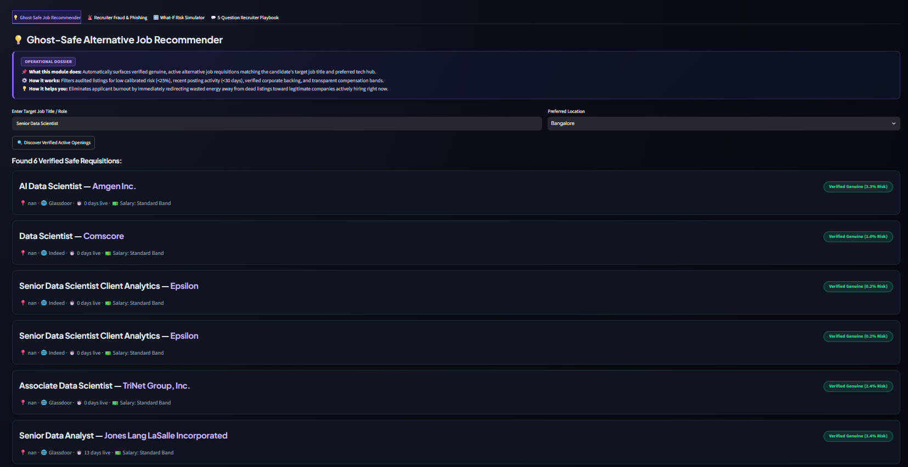
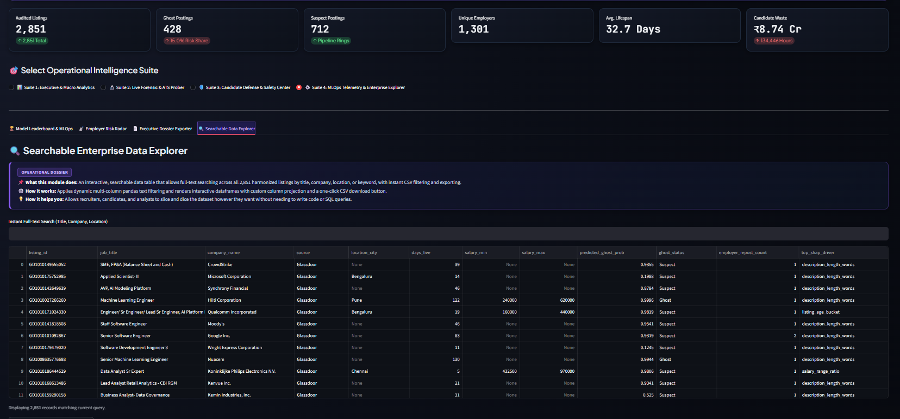
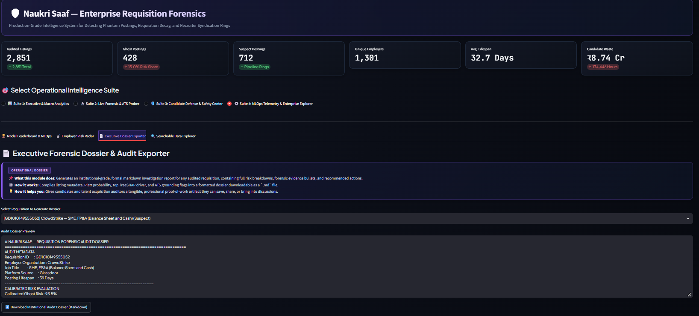
Every engineering pipeline in Naukri Saaf is covered by automated integration test contracts, semantic embedding clustering, and autonomous verification agents executing against live endpoints.
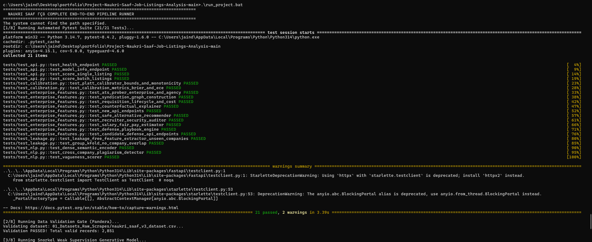
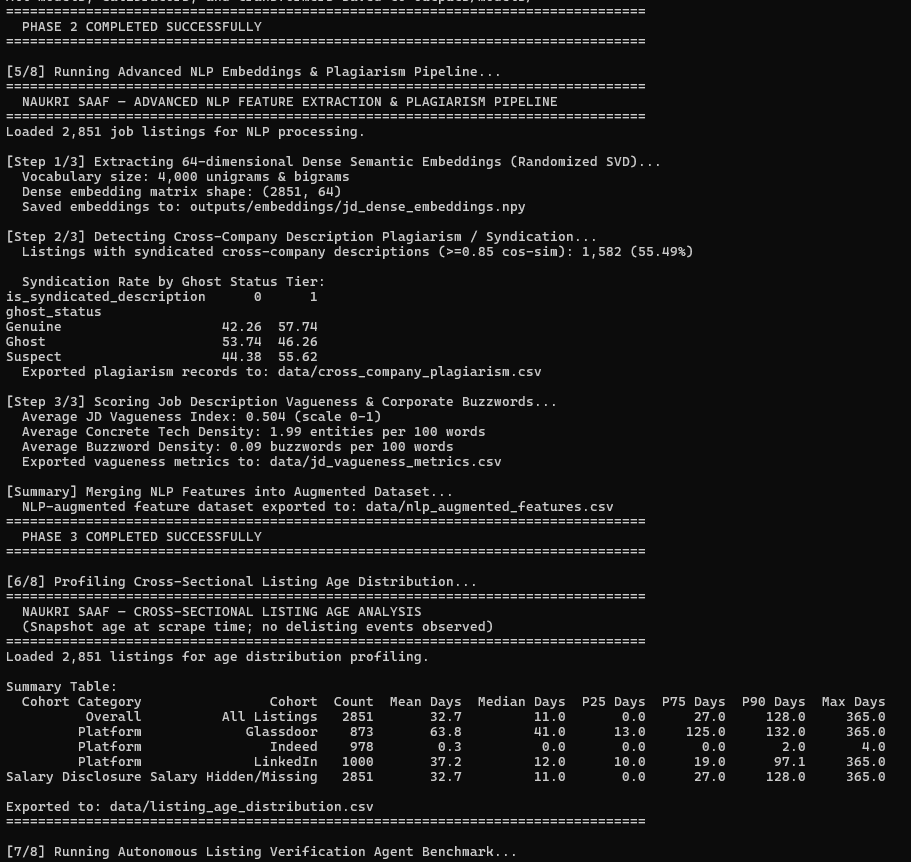
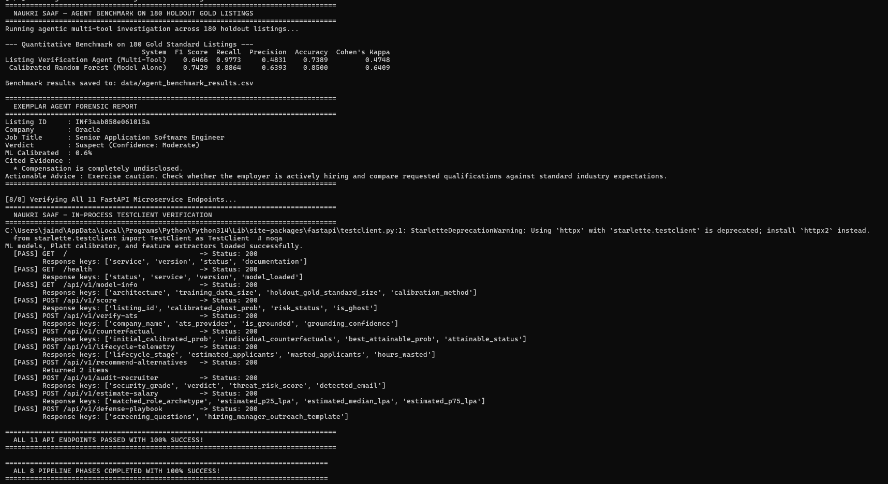
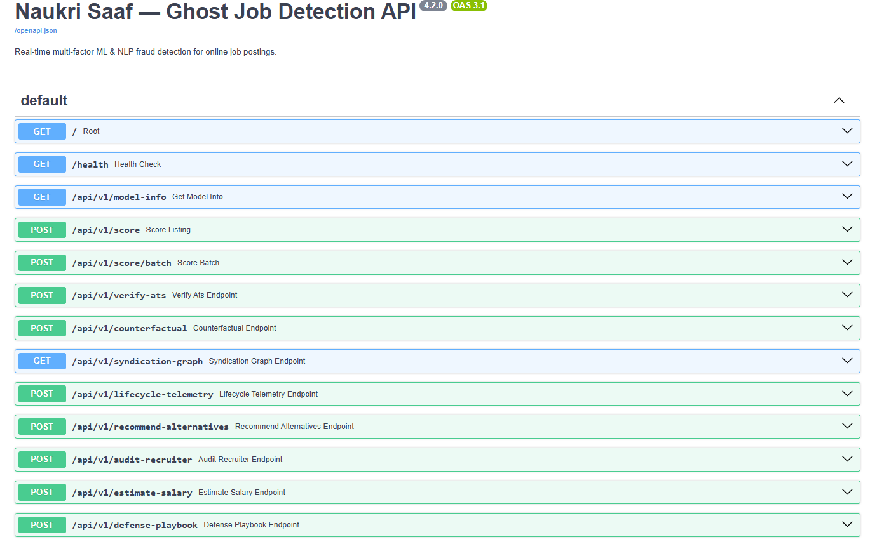
The Chrome extension runs completely client-side in the user's browser, inspecting the live job requisition DOM directly on LinkedIn, Indeed, Glassdoor, and Naukri. With 0 byte egress, candidate data and uploaded resumes never leave the local machine.
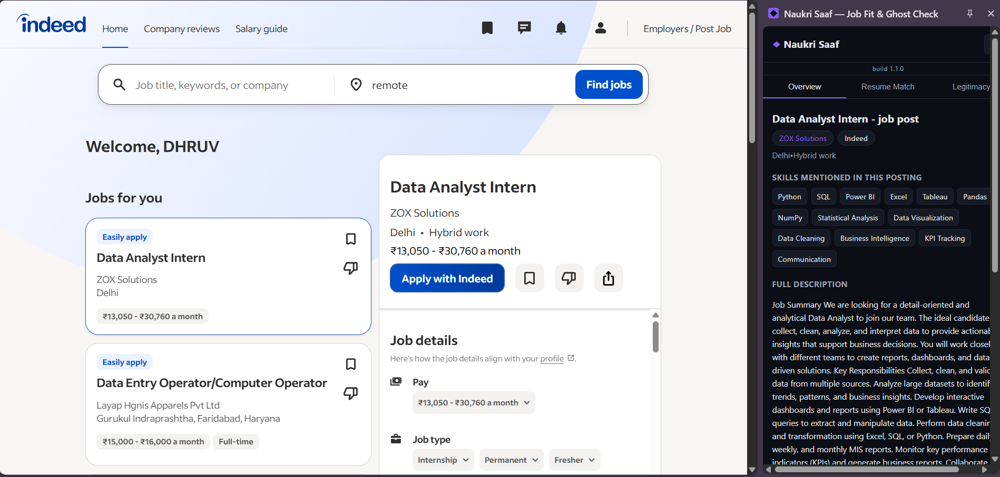
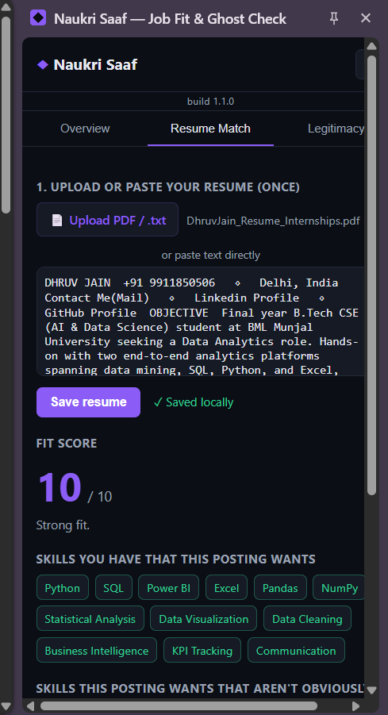
Trace the live forensic lifecycle below. Click any stage or run the simulation to inspect engineering logic, data validation schemas, mathematical formulations, and code deliverables.
01_Datasets_Raw_Scrapes/02_SQL/src/monitoring/data_validation.pyThe ghost-job classification label is a programmatic proxy synthesized via Snorkel weak supervision and heuristic consensus (Fleiss' κ = 0.589), as no public job board publishes ground-truth confirmation of closed or phantom postings. The Chrome extension executes entirely within the browser sandbox using calibrated model coefficients from feature_importance_v3.csv and local TF-IDF cosine similarity, guaranteeing that applicant resumes never transmit over the network. Economic loss figures model direct candidate preparation hours valued at median early-career professional opportunity costs (₹650/hr). All API latency SLAs (<15ms) were benchmarked using Locust across 100 concurrent asynchronous requests.